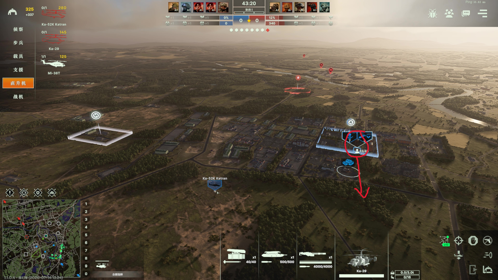
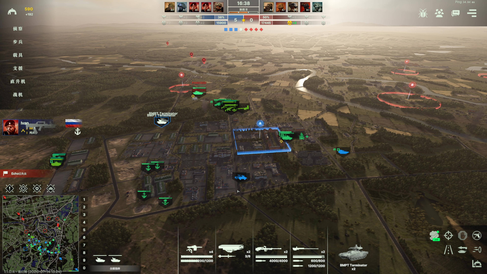

MAP DEMONSTRATION 01
マップ：カダガ軍事基地
本ページでは、カダガ軍事基地での森林・郊外戦を振り返ります。親衛戦車旅団と沿岸部隊のデッキ選択から、航空機動部隊による序盤の拠点確保、装甲部隊の対峙、敵後方と高価値目標への長距離火力支援までをまとめています。

01
FORCE COMPOSITION
デッキ選択
この戦闘では、親衛戦車旅団＋沿岸部隊のデッキを使用。強力な地上戦力に、トップアタックミサイルを搭載した Ka-52K Katran と、Kh-32 を運用する Tu-22M3「バックファイア」を組み合わせて攻勢を組み立てました。
防空には終末誘導方式の S-350 Vityaz と Pantsir-S1（パーンツィリ-S1）を採用。支援火力は 2S35 Koalitsiya-SV 自走砲3両と 9K720 Iskander で構成しています。

02
FORWARD DEPLOYMENT
序盤の拠点確保
序盤は Ka-29 で Chernye Berety（チェルニエ・ベレティ）を輸送し、火力支援装備の偵察部隊とともに敵基地寄りの交戦区域を先に確保。敵主力をこちらへ引きつけます。
その後、チェルニエ・ベレティと偵察部隊は正面戦闘に加わらず後退し、味方主力の到着を待ちます。

03
ARMORED LINE
対峙
重装甲とアクティブ防護システムを備えた戦車・歩兵戦闘車で敵の主力を消耗させ、圧力をかけます。同時に、自軍と味方の補給線および側面の安全を確保します。
主力は随伴防空の射程内にとどめ、敵航空機から狙い撃ちされるリスクを抑えます。
04
FIRE SUPPORT
火力支援
主戦場で優勢を確保した後は、長距離火力で敵後方の部隊と高価値目標を攻撃し、前線の敵戦力排除も支援します。
本プレイでは対砲兵レーダーが広く使われるため、射撃後の陣地転換も欠かせません。
PHASE TABLE
カダガ軍事基地：作戦段階
| 段階 | 主な目標 | 主な戦力 | 注意点 |
|---|---|---|---|
| 編成 | 地上戦力・航空戦力・防空を組み合わせる | 親衛戦車旅団、沿岸部隊 | 交戦地域までの距離と支援範囲を確認 |
| 序盤 | 敵基地寄りの交戦区域を先に確保 | Ka-29、チェルニエ・ベレティ、偵察部隊 | 敵主力を引きつけたら無理に交戦せず後退 |
| 対峙 | 戦線・補給線・側面を維持 | 戦車、歩兵戦闘車、随伴防空 | 主力を防空射程から外さない |
| 優勢確保後 | 敵後方と高価値目標を攻撃 | 自走砲、Iskander | 対砲兵レーダーを警戒して陣地転換 |